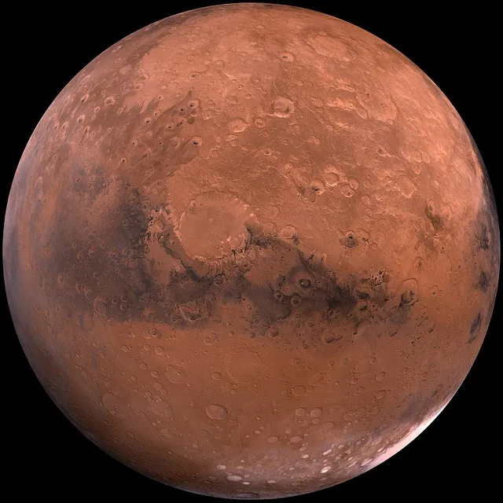
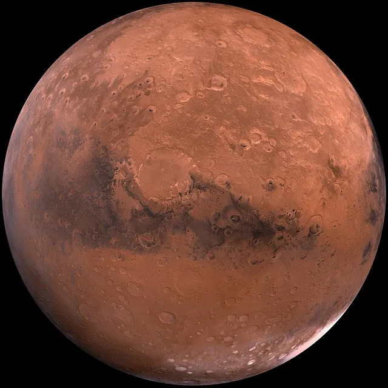

Personal Information
I'm an 18-year-old male from the vibrant city of Montreal, Quebec. Currently, I am pursuing my studies in Computer Science Technology at Vanier College. Beyond the academic realm, I also devote a significant portion of my time to a part-time job as a Service Bartender at Baton Rouge Decarie, an experience that has spanned a fulfilling two years.
In the dynamic landscape of technology and computer science, I find myself engrossed in the intricacies of this field, constantly seeking to expand my knowledge and skills. Vanier College provides me with a stimulating environment to delve into various aspects of Computer Science Technology, nurturing my passion for problem-solving and innovation.
Outside the world of academia and work, my free time is precious, often spent either at the gym or in the delightful company of my beautiful girlfriend. The gym holds a special place in my routine; it's not just a place for physical fitness, but a sanctuary where I can momentarily escape the demands of life, immerse myself in the rhythm of lifting heavy weights, and find solace in the discipline of exercise.
As I navigate through the challenges of my current studies, I look ahead with anticipation to the future. Beyond Vanier College, my aspirations extend to enrolling in university with the ultimate goal of becoming a Software Engineer. I am driven by a passion to contribute to the ever-evolving landscape of technology and make meaningful advancements in the world of software development.
The journey so far has been both rewarding and enlightening, and I eagerly anticipate the opportunities and experiences that lie ahead as I continue to pursue my academic and professional aspirations.
Favourite Quote
"The only way to do great work is to love what you do."
- Steve Jobs
"The only way to do great work is to love what you do."
- Steve Jobs
Image Gallery
 
